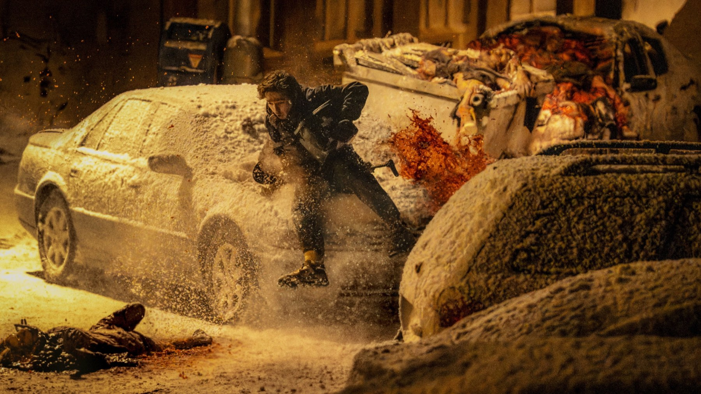

Film usciti al cinema a settembre 2026: i più interessanti
Dal Resident Evil di Zach Cregger al Brad Pitt di Heart of the Beast, passando per Silent Friend e la reunion degli Oasis: il mese in sala, film per film
Settembre è il mese in cui il cinema riparte davvero: i festival lanciano i titoli d'autore, gli studios provano i primi colpi della stagione e le sale tornano a riempirsi dopo l'estate. Quello del 2026 è stato un mese particolarmente vario, con un horror che ha battuto record, un film di Venezia tra i più amati dalla critica, una commedia salvata dall'oblio e un ritorno rock attesissimo. Ecco i titoli che ci sono sembrati più interessanti, in ordine di uscita.
Una nota pratica: a fine mese quasi tutti sono ancora in programmazione nelle sale e non sono ancora arrivati in streaming. Aggiorneremo questa pagina quando cambierà la disponibilità.
Coyote vs. Acme (2 settembre)
Il caso più curioso del mese: un film completato, accantonato da Warner Bros. e salvato dalle proteste dei fan e da Ketchup Entertainment. Dave Green porta Willy il Coyote in tribunale contro la Acme, con Will Forte nei panni di un avvocato squattrinato e John Cena in quelli del legale della multinazionale. Una lettera d'amore ai Looney Tunes che abbiamo già recensito con entusiasmo.
Silent Friend (3 settembre)
Il film più bello del mese, per noi e per buona parte della critica. Ildikó Enyedi racconta tre storie in tre epoche diverse, il 1908, il 1972 e il 2020, intorno allo stesso albero di ginkgo del giardino botanico di Marburgo, con Tony Leung, Luna Wedler e Léa Seydoux. Presentato in concorso a Venezia nel 2025, dove ha vinto il premio FIPRESCI, ha un 94% su Rotten Tomatoes e una media di 90 su Metacritic. Lento, ma di una bellezza rara.
Mutiny (10 settembre)
In Italia è uscito come Mutiny - Inverti la rotta. Jason Statham sale clandestinamente su una nave mercantile e scopre una cospirazione a bordo, diretto dal francese Jean-François Richet, con Annabelle Wallis, Roland Møller e Adrian Lester. La critica è divisa: le scene d'azione funzionano, la trama un po' meno. Per chi ama il genere e il suo protagonista, è esattamente quello che promette.
Practical Magic 2 (10 settembre)
Ventotto anni dopo il primo film, tornano le sorelle Owens di Sandra Bullock e Nicole Kidman, alle prese con la maledizione di famiglia, questa volta in un viaggio fino in Inghilterra. In Italia si intitola Amori & incantesimi 2 ed è diretto da Susanne Bier, con Joey King, Lee Pace e Maisie Williams. Le recensioni sono state tiepide, con il 36% su Rotten Tomatoes: la complicità tra le due protagoniste resta la cosa migliore.
Oasis: Don't Look Back in Anger (10 settembre)
Il documentario di Will Lovelace e Dylan Southern, scritto da Steven Knight, racconta la reunion di Liam e Noel Gallagher e il tour Oasis Live '25, con la prima intervista congiunta dei due fratelli dopo oltre quindici anni. Presentato fuori concorso alla Mostra di Venezia 2026, è passato in sala come evento e arriva su Disney+ il 9 ottobre 2026.
The Invite (16 settembre, con anteprime il 1° e il 2)
Olivia Wilde dirige e interpreta una commedia tutta ambientata in una cena tra vicini: una coppia in crisi, lei e Seth Rogen, invita a casa i dirimpettai, Penélope Cruz ed Edward Norton, e la serata prende una piega molto poco prevedibile. È il remake in lingua inglese del film spagnolo The People Upstairs di Cesc Gay, sceneggiato da Will McCormack e Rashida Jones. Dopo la presentazione al Sundance di gennaio 2026 è stato accolto molto bene, con il 96% di recensioni positive su Rotten Tomatoes.
Resident Evil (17 settembre)
Il colpo del mese. Zach Cregger, l'autore di Barbarian e Weapons, riparte da zero con una storia originale ambientata durante l'epidemia di Raccoon City, con Austin Abrams nei panni di un corriere medico. Distribuito da Eagle Pictures, è diventato il film tratto da un videogioco con i voti più alti di sempre (96% su Rotten Tomatoes, 79 su Metacritic) e ha segnato il miglior debutto della saga negli Stati Uniti. Ne abbiamo raccontato le curiosità in un articolo dedicato.

Heart of the Beast (24 settembre)
Chiude il mese un film di sopravvivenza diretto da David Ayer: Brad Pitt è un ex militare delle forze speciali che, dopo l'incidente del suo idrovolante, deve attraversare a piedi la natura selvaggia dell'Alaska insieme al suo cane. In Italia il sottotitolo è Nel profondo selvaggio. Nel cast anche J.K. Simmons e Anna Lambe. La critica lo ha promosso come un'avventura solida e coinvolgente: 85% su Rotten Tomatoes e 66 su Metacritic.
Quale scegliere?
Se avete tempo per un solo film, il nostro consiglio è Silent Friend, purché siate disposti a lasciarvi portare dal suo ritmo lento. Per una serata più leggera, The Invite e Coyote vs. Acme sono le scelte più divertenti; chi cerca brividi ha in Resident Evil il miglior horror in sala del mese. E voi, cosa avete visto a settembre?
Domande frequenti
Quali film sono usciti al cinema a settembre 2026?
Tra i principali: Coyote vs. Acme, Silent Friend, Mutiny, Practical Magic 2 (in Italia Amori & incantesimi 2), il documentario Oasis: Don't Look Back in Anger, The Invite, Resident Evil e Heart of the Beast.
Quando esce in streaming il documentario sugli Oasis?
Oasis: Don't Look Back in Anger, uscito in sala il 10 settembre 2026, arriva su Disney+ il 9 ottobre 2026.
Chi c'è nel cast di Heart of the Beast?
Brad Pitt, J.K. Simmons e Anna Lambe, diretti da David Ayer. In Italia è uscito il 24 settembre 2026.
Fonti consultate (9)
- TMDB – uscite in Italia, settembre 2026
- Wikipedia – Heart of the Beast (film)
- Wikipedia – The Invite
- Wikipedia – Practical Magic 2
- Wikipedia – Mutiny (2026 film)
- Sky TG24 – Don't Look Back in Anger su Disney+ dal 9 ottobre
- La Biennale – Oasis: Don't Look Back in Anger
- Wikipedia – Resident Evil (2026 film)
- Wikipedia – Silent Friend